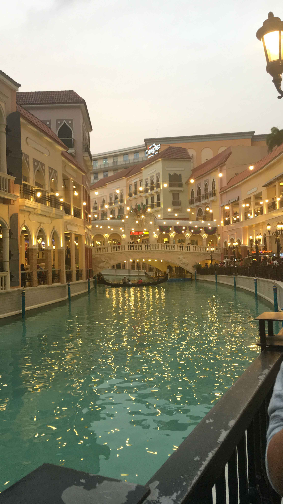
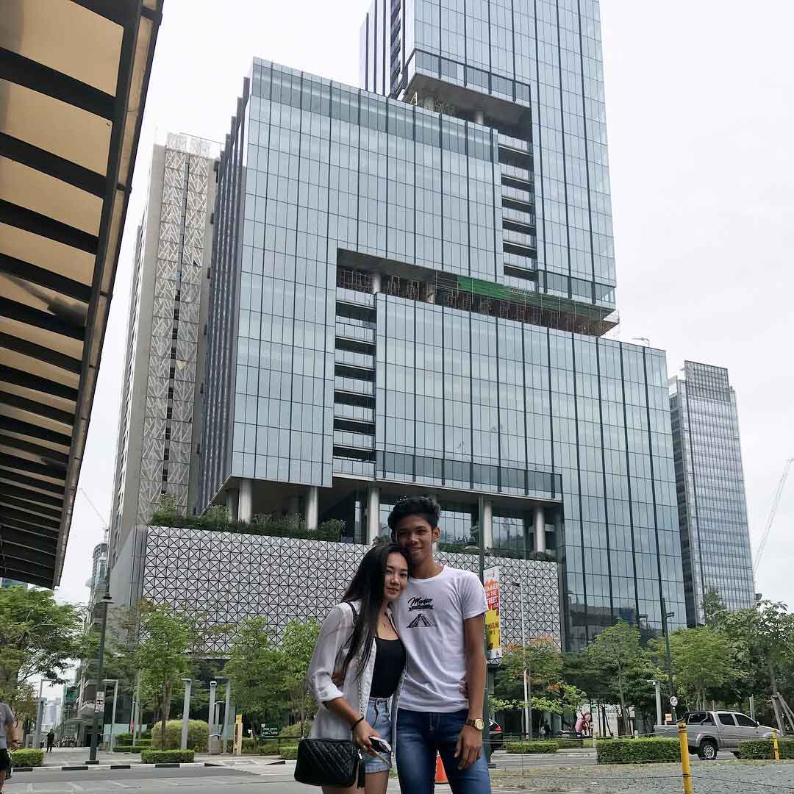

READ MORE
My Summer
“To my mind, the greatest reward and luxury of travel is to be able to experience everyday things as if for the first time, to be in a position in which almost nothing is so familiar it is taken for granted.”
READ MORE

TRAVEL BUDDY
“Everyone needs this friend that calls and says, “Get dressed, we’re going on an adventure.”
READ MORE